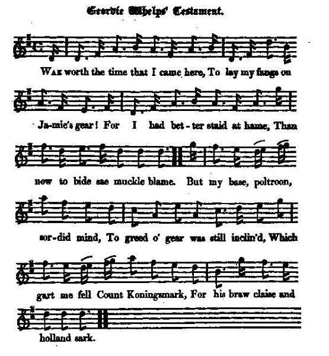

Geordie Whelp's Testament
Le Testament de Georges le Chiot
Author unknown
Tune - Mélodie"Duncan Davison"
from Hogg's "Jacobite Reliques" part I, N°70
Sequenced by Christian Souchon

|
To the tune:
Variations to this tune composed by Nathaniel Gow were published in Niel Gow's 1784 "First Collection of Niel Gow's Reels". But Glen (1891) believes its ancestral tune to have been "Strick upon the Strogin" in the Leyden MS of 1692. The most common names for the tune have been "Duncan Davison" and "Ye'll Aye Be Welcome Back Again." Source: Andrew Kuntz' "Fiddler's Companion" (see links). The first verse of "Duncan Davison", as it appears in the "Scots Musical Museum", N°149, vol II (1788) runs thus: "There was a lass, they called her Meg, And she gaed o'er the moors to spin; There was a lad that follow'd her; They called him Duncan Davison. The moor was dreigh, and Meg was skiegh, Her favour Duncan could na win; For wi' the rock she would him knock And ay she shook the temperpin. In fact this version was derived by Robert Burns from an earlier one with bawdy lyrics, also transcribed by him and posthumously published in a collection known as "The Merry Muses of Caledonia ", in 1799. It is not Duncan who pursues Meg with the chaste intention to "big a wee house" where they "will live like king and queen", but Meg who "fee'd a lad to lift her leg...", thus describing the Gael as a prostitute, susceptible of the highest male prowess, to boot. Duncan is a Highland lad. Meg is a Lowland name. The song conveys an ethnic mythology not far from the one that used to surround the figure of the Black African! We are far from the amoebean pastorals sung by the Highland Laddy and the Lowland Lassie in Aitchison's "Jacobite Melodies", N°132 or in Hogg's ditty JR2 N°106 (Hielland Laddie: first 2 Songs) To the text: "I got likewise innumerable copies of this whimsical and ridiculous song. Mr. [Walter] Scott's copy was the one principally adhered to. For an account of the respectable personages mentioned at the end of the song, see notes on the "Sow's Tail to Geordie" . Source Hogg's "Jacobite Relics" (1819). |
A propos de la mélodie:
Des variations sur ce morceau composées par Nathaniel Gow ont paru en 1784 dans l'ouvrage de Niel Gow "Premier recueil de reels de Niel Gow". Mais Glen (1891) pense que l'ancêtre de cette mélodie est le "Strick upon the Strogin" qui figure dans le manuscrit Leyden de 1692. Les deux noms les plus connus donnés à ce morceau sont "Duncan Davison" et "Ye'll Aye Be Welcome Back Again". Source: Andrew Kuntz' "Fiddler's Companion" (see links). La première strophe de "Duncan Davison", telle qu'on la trouve dans le "Musée Musical Ecossais", vol.II N°148 (1788) se chante ainsi: Une fille se nommant Meg (Marguerite) Filait sur la lande souvent. Un gars s'acharnait à la suivre. Duncan Davison, c'est son nom. La lande est triste, mais Meg est coquette. Et son coeur n'est pas pour Duncan: Elle l'accueille à grands coups de quenouille Ou de cheville de rouet. En réalité cette version a été réécrite par Robert Burns à partir d'une autre plus ancienne, qu'il a également transcrite et qui fut publiée en 1800, après sa mort dans un recueil intitulé "Les Joyeuses Muses de Calédonie ". Ce n'est pas Duncan qui poursuit Meg dans la chaste intention "de bâtir une toute petite maison" où ils "vivront comme des rois", mais Meg qui "paye un homme pour lui lever la jambe...". Le Gaël est donc représenté comme un prostitué, capable, du reste, des plus extraordinaires performances en la matière. Duncan est un gars des Highlands. "Meg" est un prénom des Lowlands. Cette chanson exprime une mythologie ethnique peu différente de celle qui entourait autrefois la figure du noir africain! On est loin du chant pastoral amébée entre le gars de Hautes Terres et la fille des Basses Terres collecté par Aitchison dans ses "Mélodies Jacobites" sous le n°132 ou par Hogg dans JR2 N°106 (Hielland Laddie - 1er et 2ème chant) A propos du texte: "J'ai reçu, pour ainsi dire une infinité de variantes de ce chant aussi satirique que saugrenu. Le présent texte reproduit essentiellement la version communiquée par M. [Walter] Scott. Pour des explications concernant les respectables personnages évoqués dans les deux dernières strophes, on se reportera au chant "Sow's Tail to Geordie" . Source: "Reliques Jacobite" de Hogg (1819). |

|
GEORDIE WHELPS' TESTAMENT. [1]
1. Wae worth the time that I came here, To lay my fangs on Jamie's gear! [2] For I had better staid at hame, Than now to bide sae muckle blame. But my base, poltroon, sordid mind, To greed o' gear was still inclin'd, Which gart me fell Count Königsmarck, [3] For his braw claise and Holland sark. 2. When that was done, by slight and might I hitch'd young Jamie frae his right, And, without ony fear or dread, I took his house out-owre his head, Pack'd up his plenishing sae braw, And to a swine-sty turn'd his ha'. I connach'd a' I couldna tak, And left him naething worth a plack. 3. But a' this couldna me content: I hang'd his tenants, seiz'd their rent . And to my shame it will be spoke, I harried a' his cotter-folk. But what am I the richer grown ? A curse conies aye wi' things that's stown ! I'm like to tine it a' belyve, For wrangous gear can never thrive. 4. But care and wonder gars me greet, For ilka day wi' skaith I meet, And I maun hame to my ain craft: The thoughts o' this hae put me daft. But yet, ere sorrow break my heart, And Satan come to claim his part, To punish me for dreary sin, I'll leave some heirship to my kin. 5. Ane auld black coat, baith lang and wide, Wi' snishen barken'd like a hide, A skeplet hat, and plaiden hose, A jerkin, clartit a' wi' brose, A pair o' sheen that wants a heel, A periwig wad fleg the deil, A pair o' breeks that wants the doup, Twa cutties, and a timmer stoup. 6. A mutchkin cog, twa rotten caps, Set o' the bink to keep the draps, Some cabbage growing i' the yard, Ane pig, ane pock, ane candle-sherd, A heap o' brats upo' the brae, Some tree-clouts and foul wisps o' strae, A rusty sword that lies there ben, Twa chickens and a clockin hen. 7. A rickle o' peats out-owre the knowe, A trimmer, and a doddit yowe, A stirky, and a hummle cow, Twa grices, and my dear black sow, A rag to dight her filthy snout, A brechan, and a carding-clout, A bassie, and a bannock-stick: There's gear enough to make ye sick. 8. Besides a mare that's blind and lame, That us'd to bear a cuckold hame, [4] A thraw-crook, and a broken gaud : There's gear enough to put ye mad. A lang-kail-knife, an auld sheer-blade, A dibble, and a flauchter-spade. Tak part hereof, baith great and sma'; Mine heirs, it weel becomes you a". 9. But yet, before that a' be done, There's something for my graceless son, That awkward ass, wi' filthy scouk ; My malison light on his bouk ! [5] And farther, for his part o' gear, I leave the horns his dad did wear ; But yet I'd better leave the same To Whigs, to blaw my lasting shame. 10. To the same Whigs I leave my curse, My guilty conscience, and toom purse : I hope my torments they will feel, When they gang skelpin to the deil. For to the times their creed they shape; They girn, they glour, they scouk, and gape, As they wad gaunch to eat the starns. The muckle deil ding out their harns! 11. Wi' my twa Turks I winna sinder, [6] For that wad my last turney hinder; For baith can speer the nearest gate, And lead me in, though it be late, Where Oliver and Willie Buck [7] Sit o'er the lugs in smeeky muck, Wi' hips sae het, and beins sae bare; They'll e'en be blythe when Geordie's there. 12. To Fisslerump and Kilmansack, [8] Wha aft hae gart my curpin crack, To ilka Dutch and German jade, I leave my sceptre to their trade. But O, my bonny darling sow, How sair my heart's to part wi' you, When l think on the happy days That we hae had 'mang fat and fleas. 13. My darling, daunted, greasy dame, l leave thee fouth , ' sin and shame, And ane deil's brander, when l'm gone To fry thy sunsy hurdies on. But to my lean and shrinkit witch l leave damnation and the itch. To a' my friends, where'er they be, The curse of heav'n eternally. Source: Jacobite Minstrelsy, published in Glasgow by R. Griffin & Cie and Robert Malcolm, printer in 1828. |
LE TESTAMENT DE GEORGES LE CHIOT [1]
1. Maudit le jour où dans la bourse De Jacquot je plantai mes crocs! [2] Qu'ai-je gagné dans cette course? Sur moi le peuple crie haro. Mais j'ai l'esprit aussi lâche et sordide Que je suis avide de biens. Il fallut que Königsmarck je trucide [3] Pour avoir sa robe en satin. 2. Quand ce fut fait, je sus en douce Priver Jacquot de tous ses droits, Sans éprouver la moindre frousse: Son chez-lui devint mon chez-moi. A moi, tous ses beaux tapis et ses meubles! J'ai fait de son home un taudis: Tout ce qui n'entrait pas dans ma carriole, Sans hésiter je l'ai détruit. 3. Mais, bien sûr, je ne suis pas homme A de si peu me contenter: J'ai pillé tous ses factotums, J'en ai honte, et tous ses fermiers! Croyez-vous pour autant que je sois riche? Tous ces biens sont ensorcelés Et, mal acquis, le fruit de mes rapines, Avec le temps s'est envolé! 4. Alors, je me fais un sang d'encre. Un jour ou l'autre les ennuis Me forceront à lever l'ancre. Quand j'y pense, je perds l'esprit. Aussi fais-je avant que mon cœur éclate, Que Satan réclame son dû, Pour expier ma conduite scélérate Ce court testament impromptu. 5. Un manteau noir, vieux, long et large, Souillé de tabac à priser, Un feutre informe, des savates Un pourpoint de soupe tâché; Des souliers auxquels un talon manque, une Perruque qui sème l'effroi, Des culottes qui laissent voir la lune, Des ciseaux, un pichet en bois. 6. Deux brocs cassés, une écuelle Pour capter l'eau du toit qui fuit. Des choux poussant sur ma parcelle, Une chandelle et une truie. Un tas de petits champs sur la colline, Des chaumes et quelques bosquets. Une épée qui rouille dans ma cuisine. Une poule et ses deux poulets. 7. Un gros morceau de tourbe informe, Un échenilloir, un mouton, Un bœuf, une vache sans cornes, Ma truie noire et ses deux cochons. Un chiffon pour essuyer son groin sale, Un peigne à carder, un balai, Un bâton à touiller, une timbale: On a mal, rien que d'y penser. 8. Un cheval aveugle qui boite, Jadis monté par un coucou [4] Un aiguillon, une houlette De quoi vraiment vous rendre fou. Un coupe-chou, ce ciseau sans son double, Une bêche, ainsi qu'un plantoir, Servez-vous tous, puissants ou misérables, Héritiers, tout doit vous échoir! 9. Mais avant que cela s'opère, Je pense à mon idiot de fils, Âne bâté, bête grossière, Ma malédiction soit sur lui! [5] Car je veux que lui revienne en partage Les cornes de son géniteur. Les Whigs en auraient fait meilleur usage: Perpétuer ma honte et la leur. 10. A ces Whigs je lègue ma haine, Ma bourse vide et mes remords J'ai souffert: qu'ils souffrent de même Lorsqu'ils fileront chez les morts. Pour le moment, leur croyance ils camouflent, Bec ouvert, tels des visionnaires On dirait qu'ils veulent gober les mouches. Satan dépouillera leur haire. 11. Mes deux Turcs avec moi j'emporte: [6] Je tiens à mon dernier tournoi! Qu'ils trouvent la plus proche porte! Même tard, on m'introduira Chez Olivier et le mâle Guillaume [7] Assis sur le fumier fumant, Les os à l'air et les "hanches" qui brûlent. Ils m'attendent impatiemment. 12. Mon sceptre à mes deux cavalières, La "Croupe-agile" et "Pille-et-tue" [8} A ces deux germaines rombières Qui tarifèrent leur vertu. Me séparer de ma Truie si gentille! J'en ai gros sur le cœur, hélas, Pensant au jolies parties des familles, Parmi les puces et le gras. 13. Je pars, mais, chère et grasse dame, A toi ma honte et mon péché, Et ce fer rougi par le diable Pour marquer ton joli fessier. A ma maigre et famélique sorcière, Je lègue mes démangeaisons, Et aux amis que j'eus sur cette terre, Une éternelle damnation. (Trad. Christian Souchon(c)2009) |
|
[1]
Geordie Whelp
: "This vulgar Song is ludicrously satirical of George I. and the Whigs, and must have been quite a bonne bouche for the rabble of Jacobitism."
"Whelp"="Guelph"="House of Hanover". Another "testament" will be found on the page dedicated to "Willie Winkie's Testament . [2] Jamie : James Francis Stuart (1688 - 1766), for the Jacobites, King James III and VIII since 1701. [3] Königsmarck : one of the many pieces of gossip circulated about the mysterious disappearing of Königsmarck was that King George was the son of the young Count. The present song surmises in addition that he was his murderer. [4] Cuckold : Sophie Dorothea had born George a son, George Augustus, future King George II, in 1683, and a daughter in 1687, but then the couple became estranged, until her romance with Count Königsmarck led to her imprisonment and their marriage's dissolution in 1694. [5] My malison light on his bouk! (My malediction "lie on his bulk"). "This verse has a bitter allusion to the dissensions that reigned in George's family, in consequence of his jealousy of the queen and his well known dislike of his son." [6] My twa Turks : see The Turnip, verse 11 [7] Oliver and Willie Buck : Cromwell and King William III (See James the Rover ). [8] Fisslerump and Kilmansack : The allusions in this and the following verse are obviously to George's German mistresses, mentioned in a former note. The " darling sow ," is Madame Kilmansegge, and the " shrinkit witch," Madame Schulemberg. George's taste in female beauty appears to have been truly German. The one was a mountain of fat and grease, the other was as lean as a dried herring." Source of the notes in quotation marks: "Jacobite Minstrelsy" (1828) |
[1]
Georges le Chiot
, (en anglais "Geordie Whelp): "Ce chant vulgaire se moque avec humour de Georges I et des Whigs et semble avoir été l'un des préférés du bas peuple Jacobite."
Le mot anglais "Whelp" désigne un jeune animal, tout en faisant allusion à "Guelfe" (partisan du Pape contre l'Empereur, dans l'Italie du XIIème au XVème siècle, nom qu'on donnait à la maison de Hanovre dans l'Angleterre du 18ème siècle). On trouvera un autre "testament" à la page "Willie Winkie's Testament . [2] Jacquot : Jacques François Stuart (1688 - 1766), qui était pour les Jacobite, et depuis 1701, le roi Jacques III et VIII. [3] Königsmarck : l'un des nombreux ragots colportés à propos de la mystérieuse disparition de Königsmarck était que le roi Georges était le fils du jeune Comte. Le présent chant surenchérit en en faisant son assassin. [4] Coucou (cocu) : Sophie Dorothée avait donné à Georges un fils, Georges Auguste, le futur roi Georges II, en 1683, et une fille en 1687. Ensuite le couple se sépara, jusqu'à ce que la liaison de la princesse avec le Comte Königsmark conduise à l'emprisonnement de cette dernière et à la dissolution du mariage en 1694. [5] Ma malédiction soit sur lui : "Cette strophe fait allusion de manière grinçante aux dissensions qui régnaient dans la famille de Georges qui était jaloux de la reine et connu pour détester son fils". [6] Mes deux turcs : cf. "Le navet", couplet11 [7] Olivier et le mâle (le bouc) Guillaume : Cromwell et le roi Guillaume III. (Cf. Jacques dans l'errance ) [8] Croupe-agile et Pille-et-tue : "Cette strophe et la suivante font évidemment allusion aux maîtresses allemandes de Georges dont il a été question ailleurs. La "Truie si gentille" est Madame Kielsmansegge et la "famélique sorcière", Madame de la Schulenberg. Georges, en matière de beauté féminine, semble n'avoir apprécié que ce qui était typiquement allemand. L'une de ces dames était aussi grosse et grasse que l'autre était maigre comme un hareng sêché." (Le nom "kilmansack" traduit ici par "Pille-et-tue" est une déformation voulue de "Kielsmansegge"). Source des notes entre guillemets: "Jacobite Minstrelsy" (1828) |
|
|
|